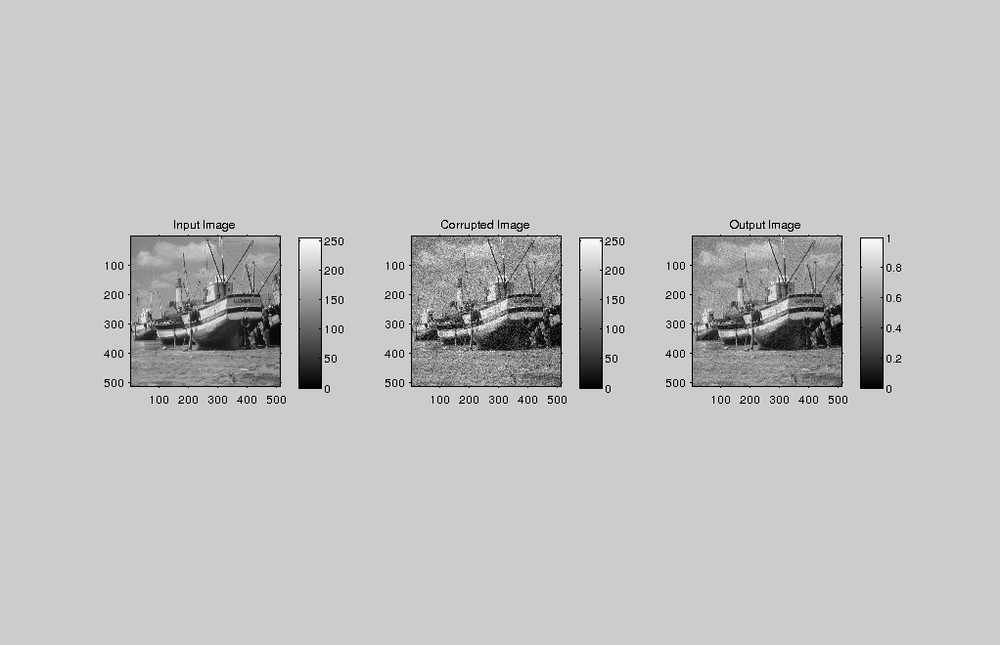
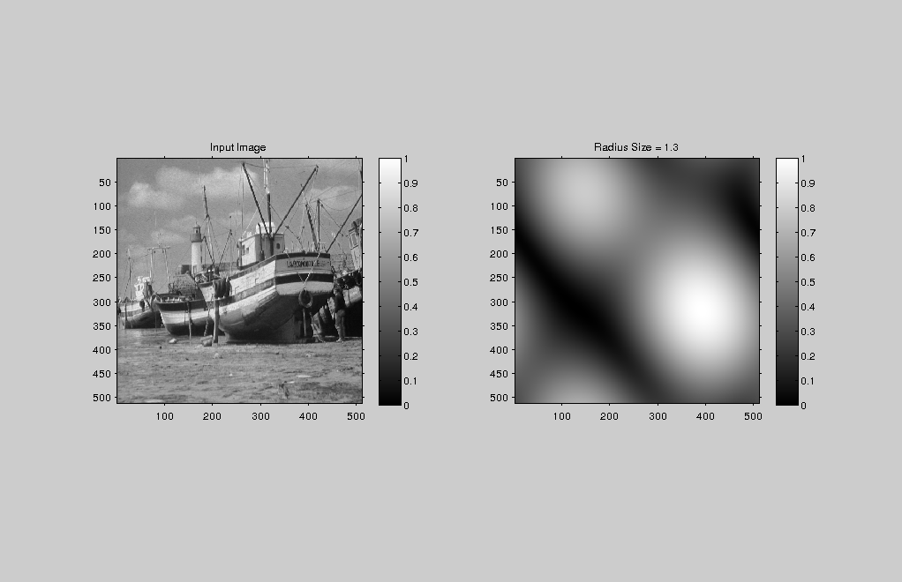
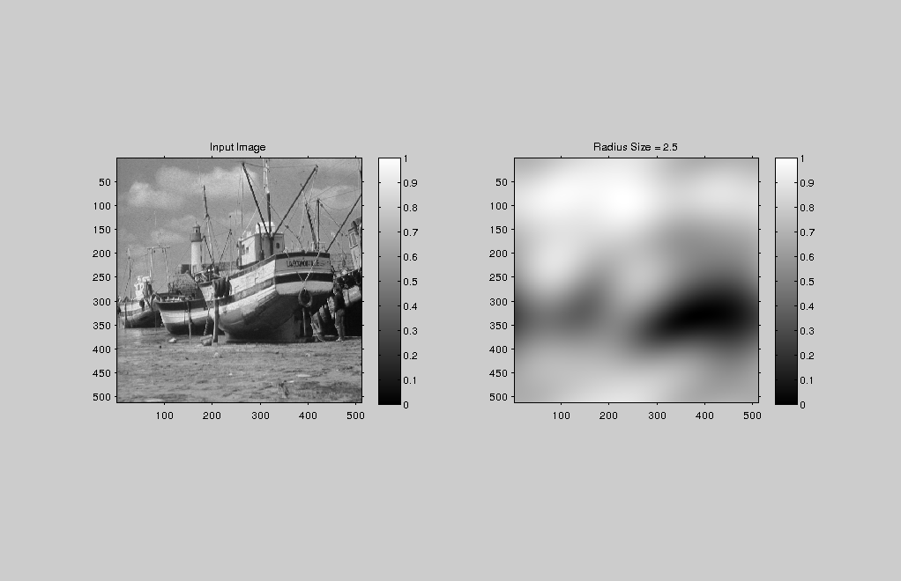
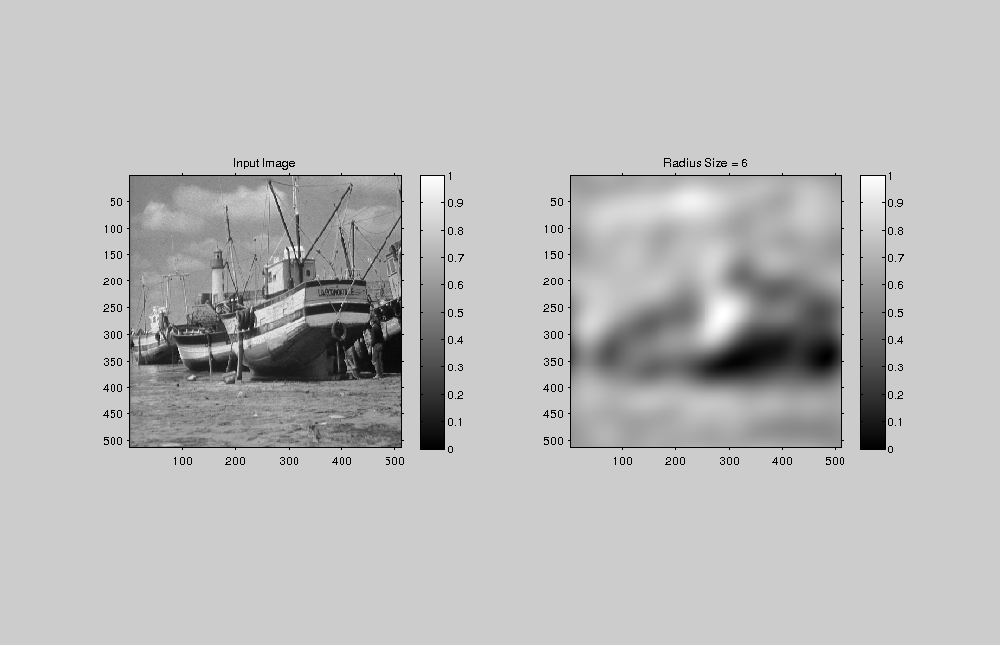
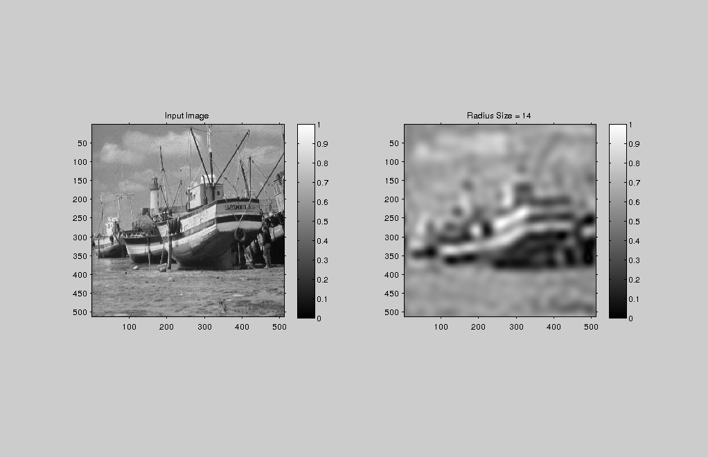
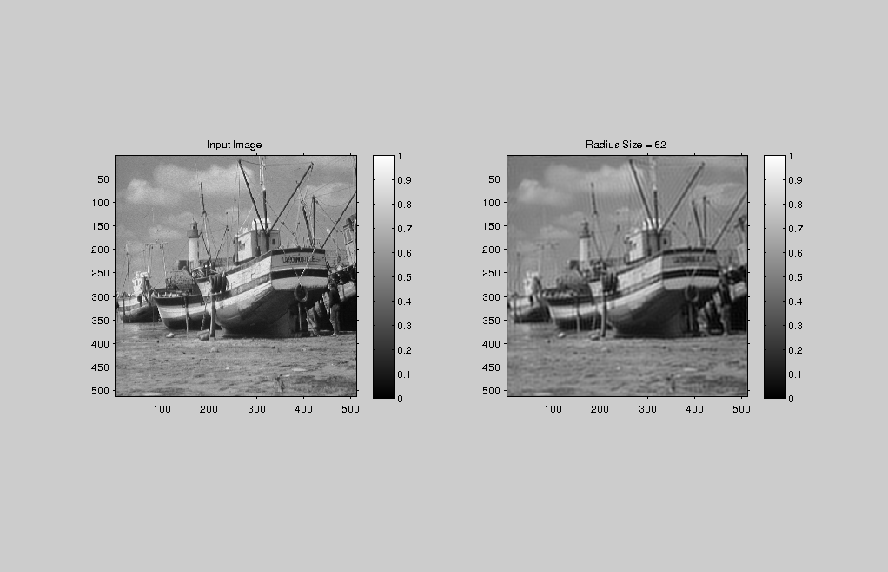

Contents
MyMainScript
tic;
Processing lionCrop
img = load('../data/boat.mat'); im=(img.imageOrig); [x y]=size(im); %randn() gives random numbers drawn independently from % a Gaussian with mean 0 and standard deviation 1. fArray = [.95, 1 ,1.05]; d = 0.34; for i=1:3
intensityRange = max(max(im)) - min(min(im)); gaussNoise = 0.1*intensityRange*randn(size(im)); corrupt = im + gaussNoise; [out] = myButterworthFiltering(corrupt,d*fArray(i));
RMSD
Used the method given in slides for calculating the RMSD
diffImage = double(out) - im; RMSD = sqrt(sum(sum(diffImage.^2))/(x*y)); disp(['RMSD =' num2str(RMSD)]); iptsetpref('ImshowAxesVisible','on'); figure('units','normalized','outerposition',[0 0 1 1]) subplot(1,3,1); imshow(uint8(im)), colorbar; title('Input Image') subplot(1,3,2); imshow(uint8(corrupt)), colorbar; name = strcat(['../images/output' 'boat']); file_name = strcat([name '.png']) imwrite(out,file_name); title('Corrupted Image'); subplot(1,3,3); imshow(mat2gray(out)), colorbar; title('Output Image'); name = strcat(['../images/output' num2str(fArray(i)) '.']); file_name = strcat([name 'png']) imwrite(mat2gray(out),file_name);
RMSD =13.6119 file_name = ../images/outputboat.png file_name = ../images/output0.95.png
RMSD =14.1058 file_name = ../images/outputboat.png file_name = ../images/output1.png
RMSD =14.6296 file_name = ../images/outputboat.png file_name = ../images/output1.05.png
end percent = [88,91,94,97,99]; radius = [1.3,2.5,6,14,62]; for i=1:5
F=fftshift(fft2(im)); e = sum(sum((abs(F)).^2));
RADIUS R
This creates a circular patch
R=radius(i);
[rr cc] = meshgrid(1:x);
C = sqrt((rr-x/2).^2+(cc-x/2).^2)<=R;
filtered = F.*C;
%Calculate Percentage Energy in disked image
energy = sum(sum(abs(filtered).^2));
percentage = energy/e*100;
disp(['Percentage = ' num2str(percentage)]);
inverseImage = ifft2(filtered);
out=sqrt(real(inverseImage).^2+imag(inverseImage).^2);
iptsetpref('ImshowAxesVisible','on');
figure('units','normalized','outerposition',[0 0 1 1])
mainFig= subplot(1,2,1);
imshow(mat2gray(im)), colorbar;
title('Input Image');
subplot(1,2,2);
imshow(mat2gray(out)), colorbar;
title(['Radius Size = ' num2str(radius(i))]);
name = strcat(['../images/energyPercent' num2str(percent(i)) '.']);
file_name = strcat([name 'png'])
imwrite(mat2gray(out),file_name);
%RMSD calculation
diffImage = out - im;
RMSD = sqrt(sum(sum(diffImage.^2))/(x*y));
disp(['RMSD =' num2str(RMSD)]);
Percentage = 1.6991 file_name = ../images/energyPercent88.png RMSD =123.052
Percentage = 92.6178 file_name = ../images/energyPercent91.png RMSD =36.2455
Percentage = 94.7715 file_name = ../images/energyPercent94.png RMSD =30.9656
Percentage = 97.0005 file_name = ../images/energyPercent97.png RMSD =23.5782
Percentage = 99.061 file_name = ../images/energyPercent99.png RMSD =13.3044
end
toc;
Elapsed time is 23.749446 seconds.